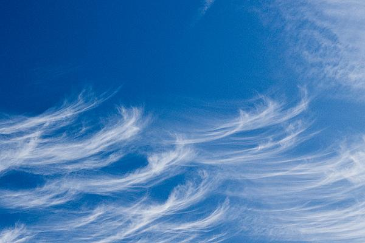
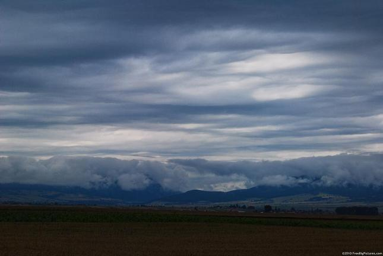
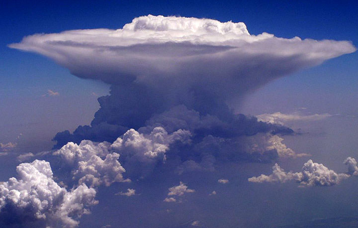
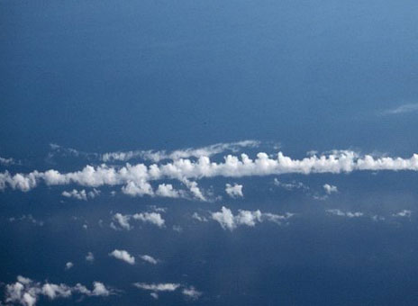

Ils sont formés par convection, c'est-à-dire que l'air chaud étant plus légère que l'air froid s'élève et il y a formation du nuage lorsque le niveau du point de rosée est atteint. Si l'air n'est pas turbulente, le nuage aura alors un plancher bien défini ainsi que des contours nets.

Ils sont formés lorsqu'un petit nuage en altitude tombe (1km/h) et est poussé par de grands vents convectifs. Lorsqu'on remarque ce type de nuage à travers un cumulonimbus, c'est un \textit{virga}.

Les stratus (ou plus fréquemment les stratocumulus) apparaissent lorsqu'il y a élévation de masses d'air chaud par la turbulence de l'air jusqu'au-dessus du point de rosée. Ces nuages n'ont pas de contours net ni de planché défini car l'agitation de l'air tire le nuage dans tous les sens.

Le nom cumulonimbus provient du latin, signifiant ''enclume''. Ces nuages sont formés lorsque la masse d'air chaud remontant au-dessus du niveau de condensation, en se refroidissant, atteint soudainement la température de l'atmosphère. Le nuage ''frappe'' alors le plafond de condensation et ses molécules d'eau sont projetées dans tous les sens créant une tête de champignon.

On appercoît des castellanus lorsqu'une couche d'air froid surmonte une masse d'air chaud, refroidissant ainsi l'air chaud par condensation. Ceci crée de petites têtes éparses au-dessus du nuage par convection. Il est nommé ainsi car sa forme rappelle un château du moyen-âge. En effet, castelli, de l'italien, vient de castrum en latin, qui signifie château. Sa présence est signe qu'un orage arrive bientôt.
